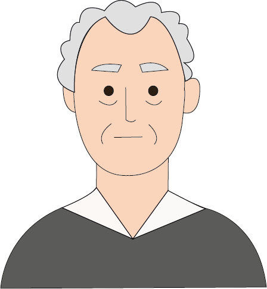

Francisco Goya


Nascita:
30 Marzo 1746, Fuendetodos, Spagna
Morte:
16 Aprile 1828, Bordeaux, Francia
Corrente:
Romanticismo



Opere più famose: La fucilazione del 3 maggio 1808; Saturno che divora i suoi figli 1823
Curiosità: A 70 anni acquista una casa di campagna nella periferia di Madrid, che prenderà il nome de “La Quinta del sordo”, dove egli dipingerà le pitture nere. Quest’ultime sono una serie di quattordici opere murali di Goya, dipinte con la tecnica dell’olio su muro su pareti ricoperte di gesso
Citazione: “L’atto della pittura riguarda un cuore che racconta a un altro cuore dove ha trovato salvezza.”